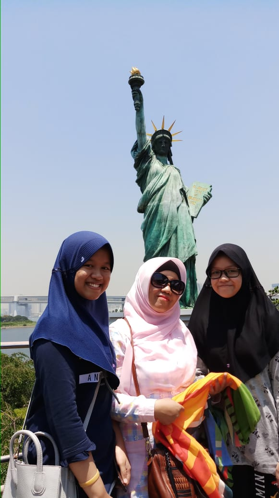
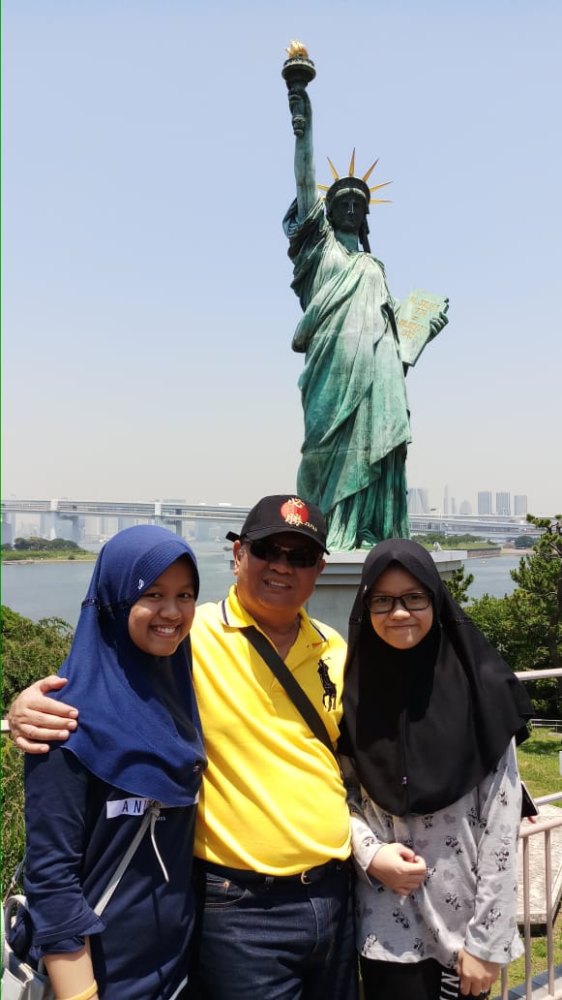
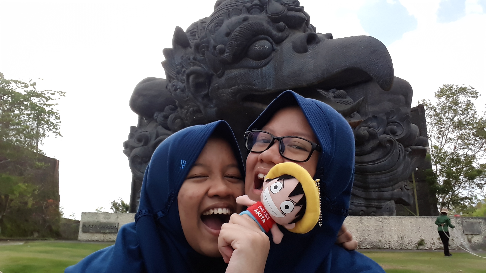

Inilah Keluargaku
 
Aku adalah anak sulung dari dua bersaudara. Ayahku bernama Dadang Bernolly. Ibuku bernama Neni Suhartini. Pekerjaan ayahku yaitu sebagai Wiraswasta. Ayah adalah pekerja keras dan semangat Ayah selalu jadi motivasiku di setiap waktu. Pekerjaan ibuku yaitu sebagai Ibu Rumah Tangga. Ibu selalu mengajarkan aku bagaimana cara merapihkan rumah, seperti mencuci, menyapu, melipat baju, dan sebagainya. Ayah dan Ibuku sendiri adalah USA Urang Sunda Asli maksudnya hehehe. Ayah asli orang Sumedang dan Ibu asli orang Garut, jadi jangan ditanya kalau kalian diajak bicara Bahasa Sunda, halus banget.

Lalu ini adalah adikku. Mutia Berliana, namanya. Namanya mirip sepertiku bahkan dulu banyak orang yang mengira kita kembar. Umurku dengannya hanya berbeda sekitar dua tahun. Bahkan, hari ulang tahun kami pun selalu sama! Karena tanggal ulang tahunnya dengan ulang tahunku hanya berselang satu minggu saja. Cukup unik bukan? Terkadang, banyak orang yang selalu mengatakan bahwa kami tidak seperti kakak-beradik yang biasanya. Menurut mereka, kakak-adik itu pasti berantem, nggak pernah akur, saling membully, dan sebagainya. Namun, dalam kehidupan nyata yang aku dan adikku alami, semua itu berbanding terbalik dengan yang mereka bicarakan. Aku selalu berbagi ceritaku dengan adikku, begitu pun adikku. Bahkan aku selalu memberi saran sebagai seorang kakak kepada adiknya. Adikku pun tidak malu bahkan takut untuk mengingatkanku ketika salah.